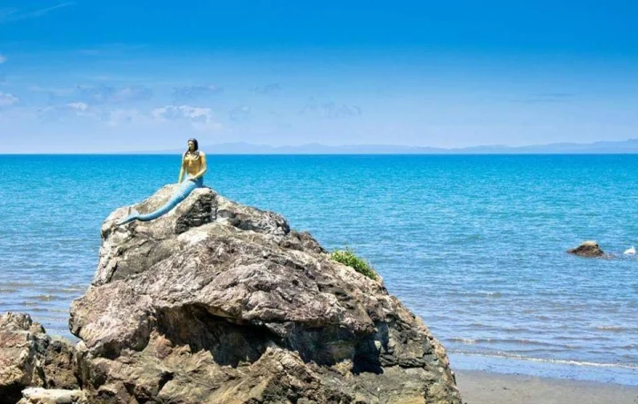

h
O
M
E
t
O
W
N


My Hometown. In the first picture, the view with the rock is breathtaking, especially when you're on top of it. The second picture captures the enchanting Bantakay Falls in Atimonan, Quezon. I recall numerous memories from my childhood in my hometown, particularly spending time with my grandparents (lolo't lola). Whenever we visited, I cherished the moments spent swimming, as the sea was just a 2-minute walk from our house.